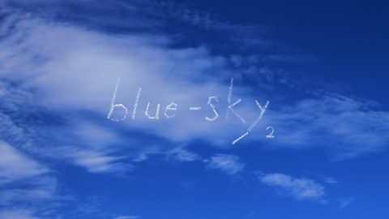

blue-sky 2
はじめに
このたびは blue-sky 2 を手にとって頂きまして、ありがとうございます。
blue-sky 2 は、「blue-sky」「PuPuPu」に続く、 je-pu-pu の 3 作品目のオリジナルゲームです。
blue-sky 2 は、空を飛ぶ感じを味わえる、一人称視点の 3D アクションゲームです。
不思議な夢に入り込んだような体験ができる、面白くて完成度の高いゲームを目指して作りました。
また、 blue-sky 2 は、手描き風の映像表現や、音楽を使った感覚的な表現を、実験的に取り込んでいます。
このゲームを選んで頂いたあなたに、少しでも楽しんで頂けると幸いです。
操作方法
blue-sky はマウスとキーボードを使って操作します。
マウス・キーボードの機能
| マウス操作 | ゲーム画面での用途 | その他の用途 |
|---|---|---|
| マウスの移動 | 視線の移動 | カーソルの移動 |
| 左ボタン | ジャンプ・アイテムを使う | 次の画面に進む・ステージの選択 |
| ホイール | アイテムの選択・双眼鏡のズーム切り替え | |
| キーボード操作 | ゲーム画面での用途 | その他の用途 |
| W キー | 前への移動 | |
| S キー | 後ろへの移動 | |
| A キー | 左への移動 | |
| D キー | 右への移動 |
ゲーム終了などの特別な操作はキーボードを使います。
キーボードの機能
| 操作 | 機能 |
|---|---|
| ESC | ステージ選択に戻る・タイトルに戻る・ゲーム終了 |
| F5 | 画面モードの切り替え |
画面
タイトル画面
左ボタンをクリックするとステージ選択に進みます。
ステージ選択画面
ステージをクリアすると、そのステージはいつでも遊べるようになり、次のステージも選択できるようになります。
左右のボタンを押すとページを移動できます。
ストーリー画面
音声によって、ストーリーが流れます。左ボタンを押すと、スキップできます。
ゲーム画面
ステージの奥にあるゴールを目指します。
ゲームの目的
ゲームの目的
全 12 ステージ、全てのステージをクリアする事が目的です。
ステージの目的
ステージのどこかにあるオレンジのドアにたどり着く事が目的です。
高いところから落ちると、ステージ失敗となり、ステージの最初からのやり直しになります。
足元
プレイヤーの足元には、プレイヤーの現在の足元を示す十字が表示されます。
ビルの上に立っている場合など、通常時は、十字は黒で表示されます。
高いところから落ちている場合など、その場所に着地すると死んでしまう時は、十字は赤で表示されます。
高いところから落ちている場合でも、風船の上やゴールの上など、
その場所に着地しても死んでしまわない時は、十字は青で表示されます。
梯子
ステージのビルの壁などには、梯子がかかっている場合があります。梯子に触って、梯子をつかむ事ができます。
梯子をつかんで、登りたい方向や降りたい方向を向いて進むと、梯子を登り降りする事ができます。
梯子の一番上まできたところで、ジャンプボタンを押し続けると、梯子を登りきる事ができます。
梯子の途中で、空中を向いてジャンプすると、その方向にジャンプする事ができます。
メダル
ステージのどこかにメダルが隠れています。
メダルは少し取りにくい所にあります。
全てのステージのメダルを取ると、追加ステージが遊べるようになります。
アクション
見る

マウスを移動すると見る方向が変わります。
見る方向が変わってもプレイヤー自身は移動しません。
落ちそうな場所では足元を良く見て進んでください。
歩く
W, S, A, D の各キーを押すと、プレイヤーがそれぞれ、
前、後ろ、左、右に歩き始めます。キーを押している間、その方向に歩き続けます。
キーを押した後、すぐ離す事で、少しずつ進めます。
走る
W ボタンを押し続けて、前に歩き続けていると、そのうちプレイヤーが走り出します。
走っている間は、移動速度が歩いている時よりも速くなります。
ビルとビルの谷間を乗り越える時や、敵から逃げる時は走ると有利です。
ジャンプ
マウスの左ボタンを押すとジャンプします。
W, S, A, D の各キーで移動中にマウスの左ボタンを押すと、ジャンプしながら前に進めます。
登る
プレイヤーの目の高さぐらいまでの段差であれば、登る事ができます。
段差に向かってジャンプし、そのまま、マウス左ボタンを押し続けると、段差を登れます。
アイテムを選ぶ・アイテムをしまう
ホイールを回すと使うアイテムを選べます。
アイテムを取った時は、自動的にそのアイテムが選択されますが、 ホイールを回して、アイテムをしまう事ができます。
アイテム
風船
取るとプレイヤーが少しだけ高く浮かびます。その後すぐに割れてしまいます。
風船で浮かんでいる途中にもジャンプできます。
風船が割れる前にジャンプするとさらに高いところに登れます。
ロケット花火
使うとプレイヤーがまっすぐ飛んでいきます。ジャンプでは登れない高いところにも登れます。
ロケット花火を使っている途中にもジャンプできます。
ロケット花火が消える前にジャンプするとさらに高いところに登れます。
ロケット花火は一度使うとなくなります。
石
拾うと、石を投げる事ができます。
プレイヤーが届かない場所でも、石を投げつける事ができるかもしれません。
投げた石は、もう一度拾う事ができます。
双眼鏡
使うと遠くを大きく見れます。ホイールでズームを切り替えて、見える大きさを調整できます。
双眼鏡は何度でも使えます。